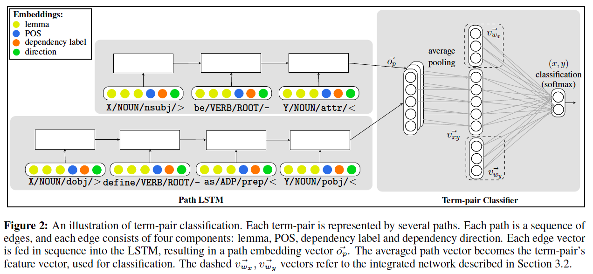
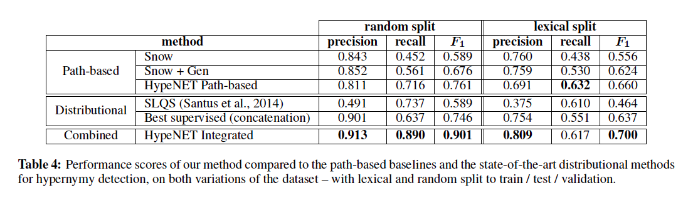

(論文メモ) Improving Hypernymy Detection with an Integrated Path-based and Distributional Method (ACL2016)
Table of contents
書誌情報
- title
- Improving Hypernymy Detection with an Integrated Path-based and Distributional Method
- author
- VeredShwartz, Yoav Goldberg, Ido Dagan
- Bar-Ilan University, Israel
- VeredShwartz, Yoav Goldberg, Ido Dagan
- venue
- ACL 2016
- url
- その他
- ACL 2016 Outstanding Paper Award
解くべき問題は何か？
- 単語の組(x,y)に対して、yがxの上位語であるかどうかを推定
- 例: x = トム・クルーズ, y = 俳優 -> yはxの上位語である
- 質問応答などで有用な応用がある
既存法との違いは何か？
- 構文解析木ベースの手法を、構文木をRNN-LSTMでencodeする手法を提案し、state of the artに近い評価値を達成
- 1の手法と分散表現ベースの手法を組み合わせる手法を提案して、state of the art を達成
この手法は以下の図で大体説明できる。

- 上図のキャプションの説明文を読めば分かるが、右側の四角の点線で囲まれた部分を取り除いたのが構文木ベースの手法
- 構文木ベースの手法の手順
- 用いるコーパスで単語ペア(x,y)が出現する文を収集し、構文解析を行って構文木を得る
- 構文解析木を無向グラフと見たときの、頂点xからyへの最短路の列p=(v_x, ..., v_y)をRNN-LSTMに入力としていれて、その出力o_pを得る
- 単語xに関するv_xは、上の図の色分けされて示されている情報(lemma, POS, dependency label, direction)をいれる
- lemma: 単語xの単語ベクトル(ここではGloVeでコーパスとして学習させている)
- POS: 品詞情報
- dependency label: 依存関係のラベル、
- direction: 最短路の枝の向き(<,-,>の3種類)
- 単語(x,y)に関してRNN-LSTMから得られたベクトルを平均する
- 平均したベクトルを出力層に繋ぐ
- 分散表現と組み合わせた手法
- 構文木ベースの手法において出力層に繋ぐときに、単語x,yの単語ベクトル(上と同様にGloVe)も繋げる
どうやって評価したか？
-
既存のデータセットを拡張し、これを用いて精度、再現率、F1値で評価し、ベースライン手法と比較した
-
データセット
- 既存の上位語下位語関係データセットは規模が小さく提案手法では上手く学習できないため、distant supervision (Riedel et al, NAACL 2013) を用いて拡張
- 具体的には、WordNet、DBPedia、Wikidata、Yagoに含まれる特定の関係のみを用いた(Table1参照)
- 約7万ペアの正解データを収集した
- ベースライン手法
- 構文解析木ベースの手法
- Snow (Snow et al., NIPS 2004): 構文解析木ベースの古典的な手法
- Snow + Gen: Snowと構文木のパターンを一般化する手法(Nakashole et al., EMNLP & CoNLL 2012)の組み合わせ
- 分散表現ベース
- SLQS (Santus et al., EACL 2014)
- Best supervised: 事前学習した単語ベクトルモデルと、いくつかの分散表現ベース手法を競わせた
- 構文解析木ベースの手法
- 結果

- random split は作成した正解データをそのままランダムに分割
- lexical split は (Levy et al., NAACL 2015)で指摘された lexical memorization という問題を避けるために提案された分け方
- lexical memorization はざっくり言うと、animal みたいな多くの単語の上位語になる単語は、単語間の関係とは無関係に上位語と判定されてしまいやすいという問題
- つまり、任意の単語xに対して、(x,animal)というペアではanimalはxの上位語と判定されてしまう
- 提案手法(HypeNET)がstate-of-the-artになった
その他
- エラー分析
- False Positive (上位語でないのに上位語と判断した場合): Table 6
- 約20%が同義語関係、約30%が下位語関係など
- False Negative (上位語であるのに上位語でないと判断した場合)
- 8割が(x,y)の共起が25回以下(True positiveの平均共起回数は99.7回)
- False Positive (上位語でないのに上位語と判断した場合): Table 6